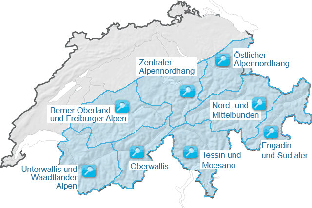

Verhalten abseits der Piste
Lawinenunfälle
Wissenswertes über Lawinen
Literatur
Kernteam Lawinenausbildung
Ausserordentlichen Lawinenlagen
Schneedaten der StationenZeitverlauf der StationsdatenBenutzungshinweiseWeitere ProdukteSchneedaten der StationenAchtung: Die Daten werden automatisch gemessen und nicht kontrolliert! Die Werte im Sommer können durch die gemessene Vegetationshöhe zustande kommen. |